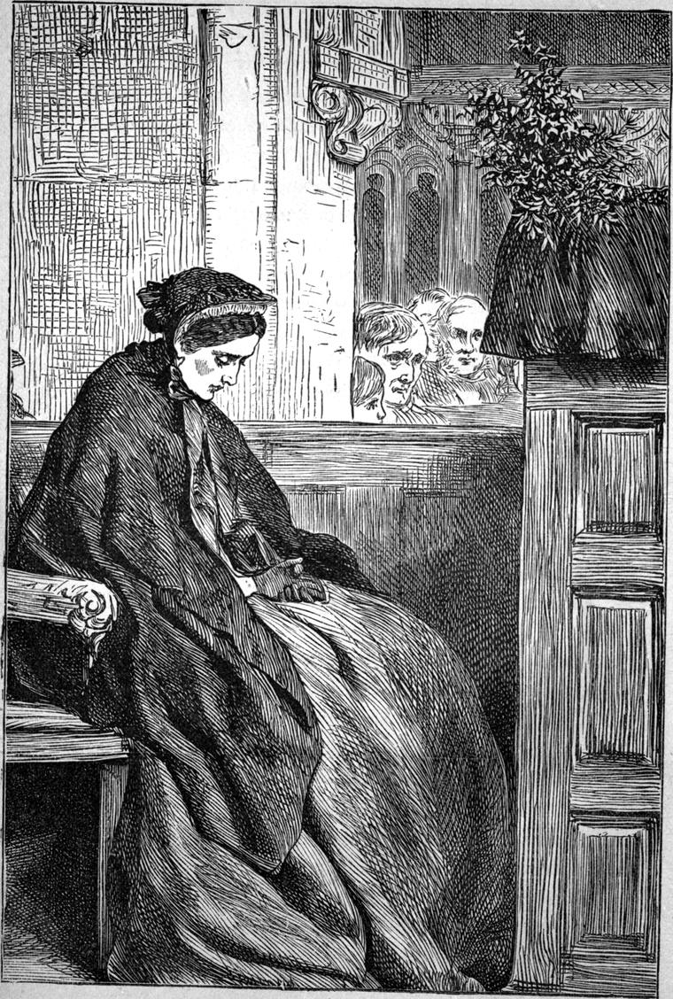

I never asked questions about the private affairs of any of my parishioners, except of themselves individually upon occasion of their asking me for advice, and some consequent necessity for knowing more than they told me. Hence, I believe, they became the more willing that I should know. But I heard a good many things from others, notwithstanding, for I could not be constantly closing the lips of the communicative as I had done those of Jane Rogers. And amongst other things, I learned that Miss Oldcastle went most Sundays to the neighbouring town of Addicehead to church. Now I had often heard of the ability of the rector, and although I had never met him, was prepared to find him a cultivated, if not an original man. Still, if I must be honest, which I hope I must, I confess that I heard the news with a pang, in analysing which I discovered the chief component to be jealousy. It was no use asking myself why I should be jealous: there the ugly thing was. So I went and told God I was ashamed, and begged Him to deliver me from the evil, because His was the kingdom and the power and the glory. And He took my part against myself, for He waits to be gracious. Perhaps the reader may, however, suspect a deeper cause for this feeling (to which I would rather not give the true name again) than a merely professional one.
But there was one stray sheep of my flock that appeared in church for the first time on the morning of Christmas Day—Catherine Weir. She did not sit beside her father, but in the most shadowy corner of the church—near the organ loft, however. She could have seen her father if she had looked up, but she kept her eyes down the whole time, and never even lifted them to me. The spot on one cheek was much brighter than that on the other, and made her look very ill.

I prayed to our God to grant me the honour of speaking a true word to them all; which honour I thought I was right in asking, because the Lord reproached the Pharisees for not seeking the honour that cometh from God. Perhaps I may have put a wrong interpretation on the passage. It is, however, a joy to think that He will not give you a stone, even if you should take it for a loaf, and ask for it as such. Nor is He, like the scribes, lying in wait to catch poor erring men in their words or their prayers, however mistaken they may be.
I took my text from the Sermon on the Mount. And as the magazine for which these Annals were first written was intended chiefly for Sunday reading, I wrote my sermon just as if I were preaching it to my unseen readers as I spoke it to my present parishioners. And here it is now:
The Gospel according to St Matthew, the sixth chapter, and part of the twenty-fourth and twenty-fifth verses:—
“‘YE CANNOT SERVE GOD AND MAMMON. THEREFORE I SAY TO YOU, TAKE NO THOUGHT FOR YOUR LIFE.’
“When the Child whose birth we celebrate with glad hearts this day, grew up to be a man, He said this. Did He mean it?—He never said what He did not mean. Did He mean it wholly?—He meant it far beyond what the words could convey. He meant it altogether and entirely. When people do not understand what the Lord says, when it seems to them that His advice is impracticable, instead of searching deeper for a meaning which will be evidently true and wise, they comfort themselves by thinking He could not have meant it altogether, and so leave it. Or they think that if He did mean it, He could not expect them to carry it out. And in the fact that they could not do it perfectly if they were to try, they take refuge from the duty of trying to do it at all; or, oftener, they do not think about it at all as anything that in the least concerns them. The Son of our Father in heaven may have become a child, may have led the one life which belongs to every man to lead, may have suffered because we are sinners, may have died for our sakes, doing the will of His Father in heaven, and yet we have nothing to do with the words He spoke out of the midst of His true, perfect knowledge, feeling, and action! Is it not strange that it should be so? Let it not be so with us this day. Let us seek to find out what our Lord means, that we may do it; trying and failing and trying again—verily to be victorious at last—what matter WHEN, so long as we are trying, and so coming nearer to our end!
“MAMMON, you know, means RICHES. Now, riches are meant to be the slave—not even the servant of man, and not to be the master. If a man serve his own servant, or, in a word, any one who has no just claim to be his master, he is a slave. But here he serves his own slave. On the other hand, to serve God, the source of our being, our own glorious Father, is freedom; in fact, is the only way to get rid of all bondage. So you see plainly enough that a man cannot serve God and Mammon. For how can a slave of his own slave be the servant of the God of freedom, of Him who can have no one to serve Him but a free man? His service is freedom. Do not, I pray you, make any confusion between service and slavery. To serve is the highest, noblest calling in creation. For even the Son of man came not to be ministered unto, but to minister, yea, with Himself.
“But how can a man SERVE riches? Why, when he says to riches, ‘Ye are my good.’ When he feels he cannot be happy without them. When he puts forth the energies of his nature to get them. When he schemes and dreams and lies awake about them. When he will not give to his neighbour for fear of becoming poor himself. When he wants to have more, and to know he has more, than he can need. When he wants to leave money behind him, not for the sake of his children or relatives, but for the name of the wealth. When he leaves his money, not to those who NEED it, even of his relations, but to those who are rich like himself, making them yet more of slaves to the overgrown monster they worship for his size. When he honours those who have money because they have money, irrespective of their character; or when he honours in a rich man what he would not honour in a poor man. Then is he the slave of Mammon. Still more is he Mammon’s slave when his devotion to his god makes him oppressive to those over whom his wealth gives him power; or when he becomes unjust in order to add to his stores.—How will it be with such a man when on a sudden he finds that the world has vanished, and he is alone with God? There lies the body in which he used to live, whose poor necessities first made money of value to him, but with which itself and its fictitious value are both left behind. He cannot now even try to bribe God with a cheque. The angels will not bow down to him because his property, as set forth in his will, takes five or six figures to express its amount It makes no difference to them that he has lost it, though; for they never respected him. And the poor souls of Hades, who envied him the wealth they had lost before, rise up as one man to welcome him, not for love of him—no worshipper of Mammon loves another—but rejoicing in the mischief that has befallen him, and saying, ‘Art thou also become one of us?’ And Lazarus in Abraham’s bosom, however sorry he may be for him, however grateful he may feel to him for the broken victuals and the penny, cannot with one drop of the water of Paradise cool that man’s parched tongue.
“Alas, poor Dives! poor server of Mammon, whose vile god can pretend to deliver him no longer! Or rather, for the blockish god never pretended anything—it was the man’s own doing—Alas for the Mammon-worshipper! he can no longer deceive himself in his riches. And so even in hell he is something nobler than he was on earth; for he worships his riches no longer. He cannot. He curses them.
“Terrible things to say on Christmas Day! But if Christmas Day teaches us anything, it teaches us to worship God and not Mammon; to worship spirit and not matter; to worship love and not power.
“Do I now hear any of my friends saying in their hearts: Let the rich take that! It does not apply to us. We are poor enough? Ah, my friends, I have known a light-hearted, liberal rich man lose his riches, and be liberal and light-hearted still. I knew a rich lady once, in giving a large gift of money to a poor man, say apologetically, ‘I hope it is no disgrace in me to be rich, as it is none in you to be poor.’ It is not the being rich that is wrong, but the serving of riches, instead of making them serve your neighbour and yourself—your neighbour for this life, yourself for the everlasting habitations. God knows it is hard for the rich man to enter into the kingdom of heaven; but the rich man does sometimes enter in; for God hath made it possible. And the greater the victory, when it is the rich man that overcometh the world. It is easier for the poor man to enter into the kingdom, yet many of the poor have failed to enter in, and the greater is the disgrace of their defeat. For the poor have more done for them, as far as outward things go, in the way of salvation than the rich, and have a beatitude all to themselves besides. For in the making of this world as a school of salvation, the poor, as the necessary majority, have been more regarded than the rich. Do not think, my poor friend, that God will let you off. He lets nobody off. You, too, must pay the uttermost farthing. He loves you too well to let you serve Mammon a whit more than your rich neighbour. ‘Serve Mammon!’ do you say? ‘How can I serve Mammon? I have no Mammon to serve.’—Would you like to have riches a moment sooner than God gives them? Would you serve Mammon if you had him?—‘Who can tell?’ do you answer? ‘Leave those questions till I am tried.’ But is there no bitterness in the tone of that response? Does it not mean, ‘It will be a long time before I have a chance of trying THAT?’—But I am not driven to such questions for the chance of convicting some of you of Mammon-worship. Let us look to the text. Read it again.
“‘YE CANNOT SERVE GOD AND MAMMON. THEREFORE I SAY UNTO YOU, TAKE NO THOUGHT FOR YOUR LIFE.’
“Why are you to take no thought? Because you cannot serve God and Mammon. Is taking thought, then, a serving of Mammon? Clearly.—Where are you now, poor man? Brooding over the frost? Will it harden the ground, so that the God of the sparrows cannot find food for His sons? Where are you now, poor woman? Sleepless over the empty cupboard and to-morrow’s dinner? ‘It is because we have no bread?’ do you answer? Have you forgotten the five loaves among the five thousand, and the fragments that were left? Or do you know nothing of your Father in heaven, who clothes the lilies and feeds the birds? O ye of little faith? O ye poor-spirited Mammon-worshippers! who worship him not even because he has given you anything, but in the hope that he may some future day benignantly regard you. But I may be too hard upon you. I know well that our Father sees a great difference between the man who is anxious about his children’s dinner, or even about his own, and the man who is only anxious to add another ten thousand to his much goods laid up for many years. But you ought to find it easy to trust in God for such a matter as your daily bread, whereas no man can by any possibility trust in God for ten thousand pounds. The former need is a God-ordained necessity; the latter desire a man-devised appetite at best—possibly swinish greed. Tell me, do you long to be rich? Then you worship Mammon. Tell me, do you think you would feel safer if you had money in the bank? Then you are Mammon-worshippers; for you would trust the barn of the rich man rather than the God who makes the corn to grow. Do you say—‘What shall we eat? and what shall we drink? and wherewithal shall we be clothedl?’ Are ye thus of doubtful mind?—Then you are Mammon-worshippers.”But how is the work of the world to be done if we take no thought?—We are nowhere told not to take thought. We MUST take thought. The question is—What are we to take or not to take thought about? By some who do not know God, little work would be done if they were not driven by anxiety of some kind. But you, friends, are you content to go with the nations of the earth, or do you seek a better way—THE way that the Father of nations would have you walk in?
“WHAT then are we to take thought about? Why, about our work. What are we not to take thought about? Why, about our life. The one is our business: the other is God’s. But you turn it the other way. You take no thought of earnestness about the doing of your duty; but you take thought of care lest God should not fulfil His part in the goings on of the world. A man’s business is just to do his duty: God takes upon Himself the feeding and the clothing. Will the work of the world be neglected if a man thinks of his work, his duty, God’s will to be done, instead of what he is to eat, what he is to drink, and wherewithal he is to be clothed? And remember all the needs of the world come back to these three. You will allow, I think, that the work of the world will be only so much the better done; that the very means of procuring the raiment or the food will be the more thoroughly used. What, then, is the only region on which the doubt can settle? Why, God. He alone remains to be doubted. Shall it be so with you? Shall the Son of man, the baby now born, and for ever with us, find no faith in you? Ah, my poor friend, who canst not trust in God—I was going to say you DESERVE—but what do I know of you to condemn and judge you?—I was going to say, you deserve to be treated like the child who frets and complains because his mother holds him on her knee and feeds him mouthful by mouthful with her own loving hand. I meant—you deserve to have your own way for a while; to be set down, and told to help yourself, and see what it will come to; to have your mother open the cupboard door for you, and leave you alone to your pleasures. Alas! poor child! When the sweets begin to pall, and the twilight begins to come duskily into the chamber, and you look about all at once and see no mother, how will your cupboard comfort you then? Ask it for a smile, for a stroke of the gentle hand, for a word of love. All the full-fed Mammon can give you is what your mother would have given you without the consequent loathing, with the light of her countenance upon it all, and the arm of her love around you.—And this is what God does sometimes, I think, with the Mammon-worshippers amongst the poor. He says to them, Take your Mammon, and see what he is worth. Ah, friends, the children of God can never be happy serving other than Him. The prodigal might fill his belly with riotous living or with the husks that the swine ate. It was all one, so long as he was not with his father. His soul was wretched. So would you be if you had wealth, for I fear you would only be worse Mammon-worshippers than now, and might well have to thank God for the misery of any swine-trough that could bring you to your senses.
“But we do see people die of starvation sometimes,—Yes. But if you did your work in God’s name, and left the rest to Him, that would not trouble you. You would say, If it be God’s will that I should starve, I can starve as well as another. And your mind would be at ease.”Thou wilt keep him in perfect peace whose mind is stayed upon Thee, because he trusteth in Thee.” Of that I am sure. It may be good for you to go hungry and bare-foot; but it must be utter death to have no faith in God. It is not, however, in God’s way of things that the man who does his work shall not live by it. We do not know why here and there a man may be left to die of hunger, but I do believe that they who wait upon the Lord shall not lack any good. What it may be good to deprive a man of till he knows and acknowledges whence it comes, it may be still better to give him when he has learned that every good and every perfect gift is from above, and cometh down from the Father of lights.
“I SHOULD like to know a man who just minded his duty and troubled himself about nothing; who did his own work and did not interfere with God’s. How nobly he would work—working not for reward, but because it was the will of God! How happily he would receive his food and clothing, receiving them as the gifts of God! What peace would be his! What a sober gaiety! How hearty and infectious his laughter! What a friend he would be! How sweet his sympathy! And his mind would be so clear he would understand everything His eye being single, his whole body would be full of light. No fear of his ever doing a mean thing. He would die in a ditch, rather. It is this fear of want that makes men do mean things. They are afraid to part with their precious lord—Mammon. He gives no safety against such a fear. One of the richest men in England is haunted with the dread of the workhouse. This man whom I should like to know, would be sure that God would have him liberal, and he would be what God would have him. Riches are not in the least necessary to that. Witness our Lord’s admiration of the poor widow with her great farthing.
“But I think I hear my troubled friend who does not love money, and yet cannot trust in God out and out, though she fain would,—I think I hear her say,”I believe I could trust Him for myself, or at least I should be ready to dare the worst for His sake; but my children—it is the thought of my children that is too much for me.” Ah, woman! she whom the Saviour praised so pleasedly, was one who trusted Him for her daughter. What an honour she had! “Be it unto thee even as thou wilt.” Do you think you love your children better than He who made them? Is not your love what it is because He put it into your heart first? Have not you often been cross with them? Sometimes unjust to them? Whence came the returning love that rose from unknown depths in your being, and swept away the anger and the injustice! You did not create that love. Probably you were not good enough to send for it by prayer. But it came. God sent it. He makes you love your children; be sorry when you have been cross with them; ashamed when you have been unjust to them; and yet you won’t trust Him to give them food and clothes! Depend upon it, if He ever refuses to give them food and clothes, and you knew all about it, the why and the wherefore, you would not dare to give them food or clothes either. He loves them a thousand times better than you do—be sure of that—and feels for their sufferings too, when He cannot give them just what He would like to give them—cannot for their good, I mean.
“But as your mistrust will go further, I can go further to meet it. You will say, ‘Ah! yes’—in your feeling, I mean, not in words,—you will say, ‘Ah! yes—food and clothing of a sort! Enough to keep life in and too much cold out! But I want my children to have plenty of GOOD food, and NICE clothes.’
“Faithless mother! Consider the birds of the air. They have so much that at least they can sing! Consider the lilies—they were red lilies, those. Would you not trust Him who delights in glorious colours—more at least than you, or He would never have created them and made us to delight in them? I do not say that your children shall be clothed in scarlet and fine linen; but if not, it is not because God despises scarlet and fine linen or does not love your children. He loves them, I say, too much to give them everything all at once. But He would make them such that they may have everything without being the worse, and with being the better for it. And if you cannot trust Him yet, it begins to be a shame, I think.
“It has been well said that no man ever sank under the burden of the day. It is when to-morrow’s burden is added to the burden of to-day, that the weight is more than a man can bear. Never load yourselves so, my friends. If you find yourselves so loaded, at least remember this: it is your own doing, not God’s. He begs you to leave the future to Him, and mind the present. What more or what else could He do to take the burden off you? Nothing else would do it. Money in the bank wouldn’t do it. He cannot do to-morrow’s business for you beforehand to save you from fear about it. That would derange everything. What else is there but to tell you to trust in Him, irrespective of the fact that nothing else but such trust can put our heart at peace, from the very nature of our relation to Him as well as the fact that we need these things. We think that we come nearer to God than the lower animals do by our foresight. But there is another side to it. We are like to Him with whom there is no past or future, with whom a day is as a thousand years, and a thousand years as one day, when we live with large bright spiritual eyes, doing our work in the great present, leaving both past and future to Him to whom they are ever present, and fearing nothing, because He is in our future, as much as He is in our past, as much as, and far more than, we can feel Him to be in our present. Partakers thus of the divine nature, resting in that perfect All-in-all in whom our nature is eternal too, we walk without fear, full of hope and courage and strength to do His will, waiting for the endless good which He is always giving as fast as He can get us able to take it in. Would not this be to be more of gods than Satan promised to Eve? To live carelessly-divine, duty-doing, fearless, loving, self-forgetting lives—is not that more than to know both good and evil—lives in which the good, like Aaron’s rod, has swallowed up the evil, and turned it into good? For pain and hunger are evils, but if faith in God swallows them up, do they not so turn into good? I say they do. And I am glad to believe that I am not alone in my parish in this conviction. I have never been too hungry, but I have had trouble which I would gladly have exchanged for hunger and cold and weariness. Some of you have known hunger and cold and weariness. Do you not join with me to say: It is well, and better than well—whatever helps us to know the love of Him who is our God?
“But there HAS BEEN just one man who has acted thus. And it is His Spirit in our hearts that makes us desire to know or to be another such—who would do the will of God for God, and let God do God’s will for Him. For His will is all. And this man is the baby whose birth we celebrate this day. Was this a condition to choose—that of a baby—by one who thought it part of a man’s high calling to take care of the morrow? Did He not thus cast the whole matter at once upon the hands and heart of His Father? Sufficient unto the baby’s day is the need thereof; he toils not, neither does he spin, and yet he is fed and clothed, and loved, and rejoiced in. Do you remind me that sometimes even his mother forgets him—a mother, most likely, to whose self-indulgence or weakness the child owes his birth as hers? Ah! but he is not therefore forgotten, however like things it may look to our half-seeing eyes, by his Father in heaven. One of the highest benefits we can reap from understanding the way of God with ourselves is, that we become able thus to trust Him for others with whom we do not understand His ways.
“But let us look at what will be more easily shown—how, namely, He did the will of His Father, and took no thought for the morrow after He became a man. Remember how He forsook His trade when the time came for Him to preach. Preaching was not a profession then. There were no monasteries, or vicarages, or stipends, then. Yet witness for the Father the garment woven throughout; the ministering of women; the purse in common! Hard-working men and rich ladies were ready to help Him, and did help Him with all that He needed.—Did He then never want? Yes; once at least—for a little while only.
“He was a-hungered in the wilderness. ‘Make bread,’ said Satan. ‘No,’ said our Lord.—He could starve; but He could not eat bread that His Father did not give Him, even though He could make it Himself. He had come hither to be tried. But when the victory was secure, lo! the angels brought Him food from His Father.—Which was better? To feed Himself, or be fed by His Father? Judge yourselves, anxious people, He sought the kingdom of God and His righteousness, and the bread was added unto Him.
“And this gives me occasion to remark that the same truth holds with regard to any portion of the future as well as the morrow. It is a principle, not a command, or an encouragement, or a promise merely. In respect of it there is no difference between next day and next year, next hour and next century. You will see at once the absurdity of taking no thought for the morrow, and taking thought for next year. But do you see likewise that it is equally reasonable to trust God for the next moment, and equally unreasonable not to trust Him? The Lord was hungry and needed food now, though He could still go without for a while. He left it to His Father. And so He told His disciples to do when they were called to answer before judges and rulers. ‘Take no thought. It shall be given you what ye shall say.’ You have a disagreeable duty to do at twelve o’clock. Do not blacken nine and ten and eleven, and all between, with the colour of twelve. Do the work of each, and reap your reward in peace. So when the dreaded moment in the future becomes the present, you shall meet it walking in the light, and that light will overcome its darkness. How often do men who have made up their minds what to say and do under certain expected circumstances, forget the words and reverse the actions! The best preparation is the present well seen to, the last duty done. For this will keep the eye so clear and the body so full of light that the right action will be perceived at once, the right words will rush from the heart to the lips, and the man, full of the Spirit of God because he cares for nothing but the will of God, will trample on the evil thing in love, and be sent, it may be, in a chariot of fire to the presence of his Father, or stand unmoved amid the cruel mockings of the men he loves.
“Do you feel inclined to say in your hearts: ‘It was easy for Him to take no thought, for He had the matter in His own hands?’ But observe, there is nothing very noble in a man’s taking no thought except it be from faith. If there were no God to take thought for us, we should have no right to blame any one for taking thought. You may fancy the Lord had His own power to fall back upon. But that would have been to Him just the one dreadful thing. That His Father should forget Him!—no power in Himself could make up for that. He feared nothing for Himself; and never once employed His divine power to save Him from His human fate. Let God do that for Him if He saw fit. He did not come into the world to take care of Himself. That would not be in any way divine. To fall back on Himself, God failing Him—how could that make it easy for Him to avoid care? The very idea would be torture. That would be to declare heaven void, and the world without a God. He would not even pray to His Father for what He knew He should have if He did ask it. He would just wait His will.
“But see how the fact of His own power adds tenfold significance to the fact that He trusted in God. We see that this power would not serve His need—His need not being to be fed and clothed, but to be one with the Father, to be fed by His hand, clothed by His care. This was what the Lord wanted—and we need, alas! too often without wanting it. He never once, I repeat, used His power for Himself. That was not his business. He did not care about it. His life was of no value to Him but as His Father cared for it. God would mind all that was necessary for Him, and He would mind the work His Father had given Him to do. And, my friends, this is just the one secret of a blessed life, the one thing every man comes into this world to learn. With what authority it comes to us from the lips of Him who knew all about it, and ever did as He said!
“Now you see that He took no thought for the morrow. And, in the name of the holy child Jesus, I call upon you, this Christmas day, to cast care to the winds, and trust in God; to receive the message of peace and good-will to men; to yield yourselves to the Spirit of God, that you may be taught what He wants you to know; to remember that the one gift promised without reserve to those who ask it—the one gift worth having—the gift which makes all other gifts a thousand-fold in value, is the gift of the Holy Spirit, the spirit of the child Jesus, who will take of the things of Jesus, and show them to you—make you understand them, that is—so that you shall see them to be true, and love Him with all your heart and soul, and your neighbour as yourselves.”
And here, having finished my sermon, I will give my reader some lines with which he may not be acquainted, from a writer of the Elizabethan time. I had meant to introduce them into my sermon, but I was so carried away with my subject that I forgot them. For I always preached extempore, which phrase I beg my reader will not misinterpret as meaning ON THE SPUR OF THE MOMENT, OF WITHOUT THE DUE PREPARATION OF MUCH THOUGHT.
What canst thou fear, when breathed into thy blood
His Spirit is that built thee? What dull sense
Makes thee suspect, in need, that Providence
Who made the morning, and who placed the light
Guide to thy labours; who called up the night,
And bid her fall upon thee like sweet showers,
In hollow murmurs, to lock up thy powers;
Who gave thee knowledge; who so trusted thee
To let thee grow so near Himself, the Tree?
Must He then be distrusted? Shall His frame
Discourse with Him why thus and thus I am?
He made the Angels thine, thy fellows all;
Nay even thy servants, when devotions call.
Oh! canst thou be so stupid then, so dim,
To seek a saving[1] influence, and lose Him?
Can stars protect thee? Or can poverty,
Which is the light to heaven, put out His eye!
He is my star; in Him all truth I find,
All influence, all fate. And when my mind
Is furnished with His fulness, my poor story
Shall outlive all their age, and all their glory.
The hand of danger cannot fall amiss,
When I know what, and in whose power, it is,
Nor want, the curse of man, shall make me groan:
A holy hermit is a mind alone.
A deep alloy whereby man tougher is
To bear the hammer; and the deeper still,
We still arise more image of His will;
Sickness, an humorous cloud ’twixt us and light;
And death, at longest, but another night.”
[1] Many, in those days, believed in astrology.
I had more than ordinary attention during my discourse, at one point in which I saw the down-bent head of Catherine Weir sink yet lower upon her hands. After a moment, however, she sat more erect than before, though she never lifted her eyes to meet mine. I need not assure my reader that she was not present to my mind when I spoke the words that so far had moved her. Indeed, had I thought of her, I could not have spoken them.
As I came out of the church, my people crowded about me with outstretched hands and good wishes. One woman, the aged wife of a more aged labourer, who could not get near me, called from the outskirts of the little crowd—
“May the Lord come and see ye every day, sir. And may ye never know the hunger and cold as me and Tomkins has come through.”
“Amen to the first of your blessing, Mrs Tomkins, and hearty thanks to you. But I daren’t say AMEN to the other part of it, after what I’ve been preaching, you know.”
“But there’ll be no harm if I say it for ye, sir?”
“No, for God will give me what is good, even if your kind heart should pray against it.”
“Ah, sir, ye don’t know what it is to be hungry AND cold.”
“Neither shall you any more, if I can help it.”
“God bless ye, sir. But we’re pretty tidy just in the meantime.”
I walked home, as usual on Sunday mornings, by the road. It was a lovely day. The sun shone so warm that you could not help thinking of what he would be able to do before long—draw primroses and buttercups out of the earth by force of sweet persuasive influences. But in the shadows lay fine webs and laces of ice, so delicately lovely that one could not but be glad of the cold that made the water able to please itself by taking such graceful forms. And I wondered over again for the hundredth time what could be the principle which, in the wildest, most lawless, fantastically chaotic, apparently capricious work of nature, always kept it beautiful. The beauty of holiness must be at the heart of it somehow, I thought. Because our God is so free from stain, so loving, so unselfish, so good, so altogether what He wants us to be, so holy, therefore all His works declare Him in beauty; His fingers can touch nothing but to mould it into loveliness; and even the play of His elements is in grace and tenderness of form.
And then I thought how the sun, at the farthest point from us, had begun to come back towards us; looked upon us with a hopeful smile; was like the Lord when He visited His people as a little one of themselves, to grow upon the earth till it should blossom as the rose in the light of His presence. “Ah! Lord,” I said, in my heart, “draw near unto Thy people. It is spring-time with Thy world, but yet we have cold winds and bitter hail, and pinched voices forbidding them that follow Thee and follow not with us. Draw nearer, Sun of Righteousness, and make the trees bourgeon, and the flowers blossom, and the voices grow mellow and glad, so that all shall join in praising Thee, and find thereby that harmony is better than unison. Let it be summer, O Lord, if it ever may be summer in this court of the Gentiles. But Thou hast told us that Thy kingdom cometh within us, and so Thy joy must come within us too. Draw nigh then, Lord, to those to whom Thou wilt draw nigh; and others beholding their welfare will seek to share therein too, and seeing their good works will glorify their Father in heaven.”
So I walked home, hoping in my Saviour, and wondering to think how pleasant I had found it to be His poor servant to this people. Already the doubts which had filled my mind on that first evening of gloom, doubts as to whether I had any right to the priest’s office, had utterly vanished, slain by the effort to perform the priest’s duty. I never thought about the matter now.—And how can doubt ever be fully met but by action? Try your theory; try your hypothesis; or if it is not worth trying, give it up, pull it down. And I hoped that if ever a cloud should come over me again, however dark and dismal it might be, I might be able, notwithstanding, to rejoice that the sun was shining on others though not on me, and to say with all my heart to my Father in heaven, “Thy will be done.”
When I reached my own study, I sat down by a blazing fire, and poured myself out a glass of wine; for I had to go out again to see some of my poor friends, and wanted some luncheon first.—It is a great thing to have the greetings of the universe presented in fire and food. Let me, if I may, be ever welcomed to my room in winter by a glowing hearth, in summer by a vase of flowers; if I may not, let me then think how nice they would be, and bury myself in my work. I do not think that the road to contentment lies in despising what we have not got. Let us acknowledge all good, all delight that the world holds, and be content without it. But this we can never be except by possessing the one thing, without which I do not merely say no man ought to be content, but no man CAN be content—the Spirit of the Father.
If any young people read my little chronicle, will they not be inclined to say, “The vicar has already given us in this chapter hardly anything but a long sermon; and it is too bad of him to go on preaching in his study after we saw him safe out of the pulpit”? Ah, well! just one word, and I drop the preaching for a while. My word is this: I may speak long-windedly, and even inconsiderately as regards my young readers; what I say may fail utterly to convey what I mean; I may be actually stupid sometimes, and not have a suspicion of it; but what I mean is true; and if you do not know it to be true yet, some of you at least suspect it to be true, and some of you hope it is true; and when you all see it as I mean it and as you can take it, you will rejoice with a gladness you know nothing about now. There, I have done for a little while. I won’t pledge myself for more, I assure you. For to speak about such things is the greatest delight of my age, as it was of my early manhood, next to that of loving God and my neighbour. For as these are THE two commandments of life, so they are in themselves THE pleasures of life. But there I am at it again. I beg your pardon now, for I have already inadvertently broken my promise.
I had allowed myself a half-hour before the fire with my glass of wine and piece of bread, and I soon fell into a dreamy state called REVERIE, which I fear not a few mistake for THINKING, because it is the nearest approach they ever make to it. And in this reverie I kept staring about my book-shelves. I am an old man now, and you do not know my name; and if you should ever find it out, I shall very soon hide it under some daisies, I hope, and so escape; and therefore, I am going to be egotistic in the most unpardonable manner. I am going to tell you one of my faults, for it continues, I fear, to be one of my faults still, as it certainly was at the period of which I am now writing. I am very fond of books. Do not mistake me. I do not mean that I love reading. I hope I do. That is no fault—a virtue rather than a fault. But, as the old meaning of the word FOND was FOOLISH, I use that word: I am foolishly fond of the bodies of books as distinguished from their souls, or thought-element. I do not say I love their bodies as DIVIDED from their souls; I do not say I should let a book stand upon my shelves for which I felt no respect, except indeed it happened to be useful to me in some inferior way. But I delight in seeing books about me, books even of which there seems to be no prospect that I shall have time to read a single chapter before I lay this old head down for the last time. Nay, more: I confess that if they are nicely bound, so as to glow and shine in such a fire-light as that by which I was then sitting, I like them ever so much the better. Nay, more yet—and this comes very near to showing myself worse than I thought I was when I began to tell you my fault: there are books upon my shelves which certainly at least would not occupy the place of honour they do occupy, had not some previous owner dressed them far beyond their worth, making modern apples of Sodom of them. Yet there I let them stay, because they are pleasant to the eye, although certainly not things to be desired to make one wise. I could say a great deal more about the matter, pro and con, but it would be worse than a sermon, I fear. For I suspect that by the time books, which ought to be loved for the truth that is in them, of one sort or another, come to be loved as articles of furniture, the mind has gone through a process more than analogous to that which the miser’s mind goes through—namely, that of passing from the respect of money because of what it can do, to the love of money because it is money. I have not yet reached the furniture stage, and I do not think I ever shall. I would rather burn them all. Meantime, I think one safeguard is to encourage one’s friends to borrow one’s books—not to offer individual books, which is much the same as OFFERING advice. That will probably take some of the shine off them, and put a few thumb-marks in them, which both are very wholesome towards the arresting of the furniture declension. For my part, thumb-marks I find very obnoxious—far more so than the spoiling of the binding.—I know that some of my readers, who have had sad experience of the sort, will be saying in themselves, “He might have mentioned a surer antidote resulting from this measure, than either rubbed Russia or dirty GLOVE-marks even—that of utter disappearance and irreparable loss.” But no; that has seldom happened to me—because I trust my pocketbook, and never my memory, with the names of those to whom the individual books are committed.—There, then, is a little bit of practical advice in both directions for young book-lovers.
Again I am reminded that I am getting old. What digressions!
Gazing about on my treasures, the thought suddenly struck me that I had never done as I had promised Judy; had never found out what her aunt’s name meant in Anglo-Saxon. I would do so now. I got down my dictionary, and soon discovered that Ethelwyn meant Home-joy, or Inheritance.
“A lovely meaning,” I said to myself.
And then I went off into another reverie, with the composition of which I shall not trouble my reader; and with the mention of which I had, perhaps, no right to occupy the fragment of his time spent in reading it, seeing I did not intend to tell him how it was made up. I will tell him something else instead.
Several families had asked me to take my Christmas dinner with them; but, not liking to be thus limited, I had answered each that I would not, if they would excuse me, but would look in some time or other in the course of the evening.
When my half-hour was out, I got up and filled my pockets with little presents for my poor people, and set out to find them in their own homes.
I was variously received, but unvaryingly with kindness; and my little presents were accepted, at least in most instances, with a gratitude which made me ashamed of them and of myself too for a few moments. Mrs. Tomkins looked as if she had never seen so much tea together before, though there was only a couple of pounds of it; and her husband received a pair of warm trousers none the less cordially that they were not quite new, the fact being that I found I did not myself need such warm clothing this winter as I had needed the last. I did not dare to offer Catherine Weir anything, but I gave her little boy a box of water-colours—in remembrance of the first time I saw him, though I said nothing about that. His mother did not thank me. She told little Gerard to do so, however, and that was something. And, indeed, the boy’s sweetness would have been enough for both.
Gerard—an unusual name in England; specially not to be looked for in the class to which she belonged.
When I reached Old Rogers’s cottage, whither I carried a few yards of ribbon, bought by myself, I assure my lady friends, with the special object that the colour should be bright enough for her taste, and pure enough of its kind for mine, as an offering to the good dame, and a small hymn-book, in which were some hymns of my own making, for the good man—
But do forgive me, friends, for actually describing my paltry presents. I can dare to assure you it comes from a talking old man’s love of detail, and from no admiration of such small givings as those. You see I trust you, and I want to stand well with you. I never could be indifferent to what people thought of me; though I have had to fight hard to act as freely as if I were indifferent, especially when upon occasion I found myself approved of. It is more difficult to walk straight then, than when men are all against you.—As I have already broken a sentence, which will not be past setting for a while yet, I may as well go on to say here, lest any one should remark that a clergyman ought not to show off his virtues, nor yet teach his people bad habits by making them look out for presents—that my income not only seemed to me disproportioned to the amount of labour necessary in the parish, but certainly was larger than I required to spend upon myself; and the miserly passion for books I contrived to keep a good deal in check; for I had no fancy for gliding devil-wards for the sake of a few books after all. So there was no great virtue—was there?—in easing my heart by giving a few of the good things people give their children to my poor friends, whose kind reception of them gave me as much pleasure as the gifts gave them. They valued the kindness in the gift, and to look out for kindness will not make people greedy.
When I reached the cottage, I found not merely Jane there with her father and mother, which was natural on Christmas Day, seeing there seemed to be no company at the Hall, but my little Judy as well, sitting in the old woman’s arm-chair, (not that she used it much, but it was called hers,) and looking as much at home as—as she did in the pond.
“Why, Judy!” I exclaimed, “you here?”
“Yes. Why not, Mr Walton?” she returned, holding out her hand without rising, for the chair was such a large one, and she was set so far back in it that the easier way was not to rise, which, seeing she was not greatly overburdened with reverence, was not, I presume, a cause of much annoyance to the little damsel.
“I know no reason why I shouldn’t see a Sandwich Islander here. Yet I might express surprise if I did find one, might I not?”
Judy pretended to pout, and muttered something about comparing her to a cannibal. But Jane took up the explanation.
“Mistress had to go off to London with her mother to-day, sir, quite unexpected, on some banking business, I fancy, from what I—I beg your pardon, sir. They’re gone anyhow, whatever the reason may be; and so I came to see my father and mother, and Miss Judy would come with me.”
“She’s very welcome,” said Mrs Rogers.
“How could I stay up there with nobody but Jacob, and that old wolf Sarah? I wouldn’t be left alone with her for the world. She’d have me in the Bishop’s Pool before you came back, Janey dear.”
“That wouldn’t matter much to you, would it, Judy?” I said.
“She’s a white wolf, that old Sarah, I know?” was all her answer.
“But what will the old lady say when she finds you brought the young lady here?” asked Mrs Rogers.
“I didn’t bring her, mother. She would come.”
“Besides, she’ll never know it,” said Judy.
I did not see that it was my part to read Judy a lecture here, though perhaps I might have done so if I had had more influence over her than I had. I wanted to gain some influence over her, and knew that the way to render my desire impossible of fulfilment would be, to find fault with what in her was a very small affair, whatever it might be in one who had been properly brought up. Besides, a clergyman is not a moral policeman. So I took no notice of the impropriety.
“Had they actually to go away on the morning of Christmas Day?” I said.
“They went anyhow, whether they had to do it or not, sir,” answered Jane.
“Aunt Ethelwyn didn’t want to go till to-morrow,” said Judy. “She said something about coming to church this morning. But grannie said they must go at once. It was very cross of old grannie. Think what a Christmas Day to me without auntie, and with Sarah! But I don’t mean to go home till it’s quite dark. I mean to stop here with dear Old Rogers—that I do.” The latch was gently lifted, and in came young Brownrigg. So I thought it was time to leave my best Christmas wishes and take myself away. Old Rogers came with me to the mill-stream as usual.
“It ’mazes me, sir,” he said, “a gentleman o’ your age and bringin’ up to know all that you tould us this mornin’. It ‘ud be no wonder now for a man like me, come to be the shock o’ corn fully ripe—leastways yallow and white enough outside if there bean’t much more than milk inside it yet,—it ’ud be no mystery for a man like me who’d been brought up hard, and tossed about well-nigh all the world over—why, there’s scarce a wave on the Atlantic but knows Old Rogers!”
He made the parenthesis with a laugh, and began anew.
“It ‘ud be a shame of a man like me not to know all as you said this mornin’, sir—leastways I don’t mean able to say it right off as you do, sir; but not to know it, after the Almighty had been at such pains to beat it into my hard head just to trust in Him and fear nothing and nobody—captain, bosun, devil, sunk rock, or breakers ahead; but just to mind Him and stand by halliard, brace, or wheel, or hang on by the leeward earing for that matter. For, you see, what does it signify whether I go to the bottom or not, so long as I didn’t skulk? or rather,” and here the old man took off his hat and looked up, “so long as the Great Captain has His way, and things is done to His mind? But how ever a man like you, goin’ to the college, and readin’ books, and warm o’ nights, and never, by your own confession this blessed mornin’, sir, knowin’ what it was to be downright hungry, how ever you come to know all those things, is just past my comprehension, except by a double portion o’ the Spirit, sir. And that’s the way I account for it, sir.”
Although I knew enough about a ship to understand the old man, I am not sure that I have properly represented his sea-phrase. But that is of small consequence, so long as I give his meaning. And a meaning can occasionally be even better CONVEYED by less accurate words.
“I will try to tell you how I come to know about these things as I do,” I returned. “How my knowledge may stand the test of further and severer trials remains to be seen. But if I should fail any time, old friend, and neither trust in God nor do my duty, what I have said to you remains true all the same.”
“That it do, sir, whoever may come short.”
“And more than that: failure does not necessarily prove any one to be a hypocrite of no faith. He may be still a man of little faith.”
“Surely, surely, sir. I remember once that my faith broke down—just for one moment, sir. And then the Lord gave me my way lest I should blaspheme Him in thy wicked heart.”
“How was that, Rogers?”
“A scream came from the quarter-deck, and then the cry: ‘Child overboard!’ There was but one child, the captain’s, aboard. I was sitting just aft the foremast, herring-boning a split in a spare jib. I sprang to the bulwark, and there, sure enough, was the child, going fast astarn, but pretty high in the water. How it happened I can’t think to this day, sir, but I suppose my needle, in the hurry, had got into my jacket, so as to skewer it to my jersey, for we were far south of the line at the time, sir, and it was cold. However that may be, as soon as I was overboard, which you may be sure didn’t want the time I take tellin’ of it, I found that I ought to ha’ pulled my jacket off afore I gave the bulwark the last kick. So I rose on the water, and began to pull it over my head—for it was wide, and that was the easiest way, I thought, in the water. But when I had got it right over my head, there it stuck. And there was I, blind as a Dutchman in a fog, and in as strait a jacket as ever poor wretch in Bedlam, for I could only just wag my flippers. Mr Walton, I believe I swore—the Lord forgive me!—but it was trying. And what was far worse, for one moment I disbelieved in Him; and I do say that’s worse than swearing—in a hurry I mean. And that moment something went, the jacket was off, and there was I feelin’ as if every stroke I took was as wide as the mainyard. I had no time to repent, only to thank God. And wasn’t it more than I deserved, sir? Ah! He can rebuke a man for unbelief by giving him the desire of his heart. And that’s a better rebuke than tying him up to the gratings.”
“And did you save the child?”
“Oh yes, sir.”
“And wasn’t the captain pleased?”
“I believe he was, sir. He gave me a glass o’ grog, sir. But you was a sayin’ of something, sir, when I interrupted of you.”
“I am very glad you did interrupt me.”
“I’m not though, sir. I Ve lost summat I’ll never hear more.”
“No, you shan’t lose it. I was going to tell you how I think I came to understand a little about the things I was talking of to-day.”
“That’s it, sir; that’s it. Well, sir, if you please?”
“You’ve heard of Sir Philip Sidney, haven’t you, Old Rogers?”
“He was a great joker, wasn’t he, sir?”
“No, no; you’re thinking of Sydney Smith, Rogers.”
“It may be, sir. I am an ignorant man.”
“You are no more ignorant than you ought to be.—But it is time you should know him, for he was just one of your sort. I will come down some evening and tell you about him.”
I may as well mention here that this led to week-evening lectures in the barn, which, with the help of Weir the carpenter, was changed into a comfortable room, with fixed seats all round it, and plenty of cane-chairs besides—for I always disliked forms in the middle of a room. The object of these lectures was to make the people acquainted with the true heroes of their own country—men great in themselves. And the kind of choice I made may be seen by those who know about both, from the fact that, while my first two lectures were on Philip Sidney, I did not give one whole lecture even to Walter Raleigh, grand fellow as he was. I wanted chiefly to set forth the men that could rule themselves, first of all, after a noble fashion. But I have not finished these lectures yet, for I never wished to confine them to the English heroes; I am going on still, old man as I am—not however without retracing passed ground sometimes, for a new generation has come up since I came here, and there is a new one behind coming up now which I may be honoured to present in its turn to some of this grand company—this cloud of witnesses to the truth in our own and other lands, some of whom subdued kingdoms, and others were tortured to death, for the same cause and with the same result.
“Meantime,” I went on, “I only want to tell you one little thing he says in a letter to a younger brother whom he wanted to turn out as fine a fellow as possible. It is about horses, or rather, riding—for Sir Philip was the best horseman in Europe in his day, as, indeed, all things taken together, he seems to have really been the most accomplished man generally of his time in the world. Writing to this brother he says—”
I could not repeat the words exactly to Old Rogers, but I think it better to copy them exactly, in writing this account of our talk:
“At horsemanship, when you exercise it, read Crison Claudio, and a book that is called La Gloria del Cavallo, withal that you may join the thorough contemplation of it with the exercise; and so shall you profit more in a month than others in a year.”
“I think I see what you mean, sir. I had got to learn it all without book, as it were, though you know I had my old Bible, that my mother gave me, and without that I should not have learned it at all.”
“I only mean it comparatively, you know. You have had more of the practice, and I more of the theory. But if we had not both had both, we should neither of us have known anything about the matter. I never was content without trying at least to understand things; and if they are practical things, and you try to practise them at the same time as far as you do understand them, there is no end to the way in which the one lights up the other. I suppose that is how, without your experience, I have more to say about such things than you could expect. You know besides that a small matter in which a principle is involved will reveal the principle, if attended to, just as well as a great one containing the same principle. The only difference, and that a most important one, is that, though I’ve got my clay and my straw together, and they stick pretty well as yet, my brick, after all, is not half so well baked as yours, old friend, and it may crumble away yet, though I hope not.”
“I pray God to make both our bricks into stones of the New Jerusalem, sir. I think I understand you quite well. To know about a thing is of no use, except you do it. Besides, as I found out when I went to sea, you never can know a thing till you do do it, though I thought I had a tidy fancy about some things beforehand. It’s better not to be quite sure that all your seams are caulked, and so to keep a look-out on the bilge-pump; isn’t it, sir?”
During the most of this conversation, we were standing by the mill-water, half frozen over. The ice from both sides came towards the middle, leaving an empty space between, along which the dark water showed itself, hurrying away as if in fear of its life from the white death of the frost. The wheel stood motionless, and the drip from the thatch of the mill over it in the sun, had frozen in the shadow into icicles, which hung in long spikes from the spokes and the floats, making the wheel—soft green and mossy when it revolved in the gentle sun-mingled summer-water—look like its own gray skeleton now. The sun was getting low, and I should want all my time to see my other friends before dinner, for I would not willingly offend Mrs Pearson on Christmas Day by being late, especially as I guessed she was using extraordinary skill to prepare me a more than comfortable meal.
“I must go, Old Rogers,” I said; “but I will leave you something to think about till we meet again. Find out why our Lord was so much displeased with the disciples, whom He knew to be ignorant men, for not knowing what He meant when He warned them against the leaven of the Pharisees. I want to know what you think about it. You’ll find the story told both in the sixteenth chapter of St Matthew and the eighth of St Mark.”
“Well, sir, I’ll try; that is, if you will tell me what you think about it afterwards, so as to put me right, if I’m wrong.”
“Of course I will, if I can find out an explanation to satisfy me. But it is not at all clear to me now. In fact, I do not see the connecting links of our Lord’s logic in the rebuke He gives them.”
“How am I to find out then, sir—knowing nothing of logic at all?” said the old man, his rough worn face summered over with his child-like smile.
“There are many things which a little learning, while it cannot really hide them, may make you less ready to see all at once,” I answered, shaking hands with Old Rogers, and then springing across the brook with my carpet-bag in my hand.
By the time I had got through the rest of my calls, the fogs were rising from the streams and the meadows to close in upon my first Christmas Day in my own parish. How much happier I was than when I came such a few months before! The only pang I felt that day was as I passed the monsters on the gate leading to Oldcastle Hall. Should I be honoured to help only the poor of the flock? Was I to do nothing for the rich, for whom it is, and has been, and doubtless will be so hard to enter into the kingdom of heaven? And it seemed to me at the moment that the world must be made for the poor: they had so much more done for them to enable them to inherit it than the rich had.—To these people at the Hall, I did not seem acceptable. I might in time do something with Judy, but the old lady was still so dreadfully repulsive to me that it troubled my conscience to feel how I disliked her. Mr Stoddart seemed nothing more than a dilettante in religion, as well as in the arts and sciences—music always excepted; while for Miss Oldcastle, I simply did not understand her yet. And she was so beautiful! I thought her more, beautiful every time I saw her. But I never appeared to make the least progress towards any real acquaintance with her thoughts and feelings.—It seemed to me, I say, for a moment, coming from the houses of the warm-hearted poor, as if the rich had not quite fair play, as it were—as if they were sent into the world chiefly for the sake of the cultivation of the virtues of the poor, and without much chance for the cultivation of their own. I knew better than this you know, my reader; but the thought came, as thoughts will come sometimes. It vanished the moment I sought to lay hands upon it, as if it knew quite well it had no business there. But certainly I did believe that it was more like the truth to say the world was made for the poor than to say that it was made for the rich. And therefore I longed the more to do something for these whom I considered the rich of my flock; for it was dreadful to think of their being poor inside instead of outside.
Perhaps my reader will say, and say with justice, that I ought to have been as anxious about poor Farmer Brownrigg as about the beautiful lady. But the farmer had given me good reason to hope some progress in him after the way he had given in about Jane Rogers. Positively I had caught his eye during the sermon that very day. And, besides—but I will not be a hypocrite; and seeing I did not certainly take the same interest in Mr Brownrigg, I will at least be honest and confess it. As far as regards the discharge of my duties, I trust I should have behaved impartially had the necessity for any choice arisen. But my feelings were not quite under my own control. And we are nowhere, told to love everybody alike, only to love every one who comes within our reach as ourselves.
I wonder whether my old friend Dr Duncan was right. He had served on shore in Egypt under General Abercrombie, and had of course, after the fighting was over on each of the several occasions—the French being always repulsed—exercised his office amongst the wounded left on the field of battle.—“I do not know,” he said, “whether I did right or not; but I always took the man I came to first—French or English.”—I only know that my heart did not wait for the opinion of my head on the matter. I loved the old man the more that he did as he did. But as a question of casuistry, I am doubtful about its answer.
This digression is, I fear, unpardonable.
I made Mrs Pearson sit down with me to dinner, for Christmas Day was not one to dine alone upon. And I have ever since had my servants to dine with me on Christmas Day.
Then I went out again, and made another round of visits, coming in for a glass of wine at one table, an orange at another, and a hot chestnut at a third. Those whom I could not see that day, I saw on the following days between it and the new year. And so ended my Christmas holiday with my people.
But there is one little incident which I ought to relate before I close this chapter, and which I am ashamed of having so nearly forgotten.
When we had finished our dinner, and I was sitting alone drinking a class of claret before going out again, Mrs Pearson came in and told me that little Gerard Weir wanted to see me. I asked her to show him in; and the little fellow entered, looking very shy, and clinging first to the door and then to the wall.
“Come, my dear boy,” I said, “and sit down by me.”
He came directly and stood before me.
“Would you like a little wine and water?” I said; for unhappily there was no dessert, Mrs Pearson knowing that I never eat such things.
“No, thank you, sir; I never tasted wine.”
“I did not press him to take it.
“Please, sir,” he went on after a pause, putting his nand in his pocket, “mother gave me some goodies, and I kept them till I saw you come back, and here they are, sir.”
Does any reader doubt what I did or said upon this?
I said, “Thank you, my darling,” and I ate them up every one of them, that he might see me eat them before he left the house. And the dear child went off radiant.
If anybody cannot understand why I did so, I beg him to consider the matter. If then he cannot come to a conclusion concerning it, I doubt if any explanation of mine would greatly subserve his enlightenment. Meantime, I am forcibly restraining myself from yielding to the temptation to set forth my reasons, which would result in a half-hour’s sermon on the Jewish dispensation, including the burnt offering, and the wave and heave offerings, with an application to the ignorant nurses and mothers of English babies, who do the best they can to make original sin an actual fact by training children down in the way they should not go.